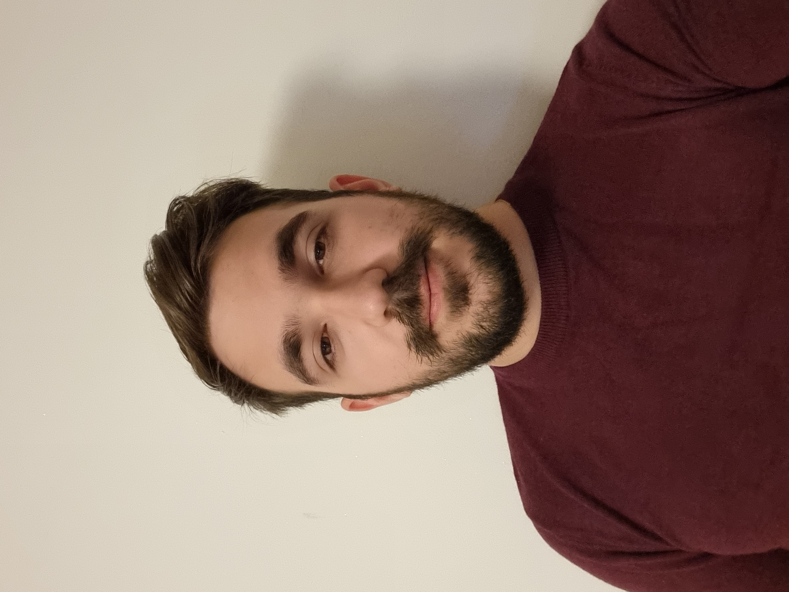

Sebi Ciobanu
| Born |
Eusebiu Ciprian Ciobanu 11 December 1998 (age 24) Iasi, Romania |
|---|---|
| Other Names |
Sebi Sebiu Sebiu98 |
| Education | Sapienza University of Rome, Rome (RM) |
This text was written using chatgpt
Re-size the page to check for the media queries
Introduction
Eusebiu Ciprian Ciobanu, widely known as Sebi, is a multifaceted individual whose life journey has taken him from Romania to Italy. Born on November 12, 1998, he has built a diverse set of skills and interests that range from software development and gaming to culinary arts. This Wikipedia page provides an overview of his life, interests, and experiences.
Early Life and Background
Eusebiu Ciprian Ciobanu was born in Romania on November 12, 1998. At the age of five, his family made the life-changing decision to relocate to Italy, where he spent the formative years of his childhood. This cross-cultural experience has had a lasting impact on his perspective and worldview.
Interests and Hobbies
Sebi is known for his eclectic set of interests, which showcase his passion for learning and self-improvement. His primary interests include:
- Training: Sebi has a strong commitment to physical fitness and enjoys regular training. His dedication to a healthy lifestyle is evident in his daily routines.
- Gaming: A fervent gamer, Sebi finds enjoyment and relaxation in the world of video games. Whether it's competitive eSports or immersive single-player experiences, he is always up for a gaming challenge.
- Programming: He has a keen interest in software development and programming. His experience in web development has allowed him to create and manage various online projects. Although he encountered a setback due to inactivity in the domain, he remains enthusiastic about programming's creative potential.
- Cooking: Sebi's culinary skills are a testament to his diverse tastes and adventurous spirit. He takes great pleasure in experimenting with various cuisines and creating unique dishes.
Dislikes
In addition to his hobbies and interests, Sebi has a few notable dislikes, which include:
- Writing Essays: He strongly dislikes the process of writing essays, finding it to be a daunting and time-consuming task.
- Washing Dishes by Hand: Hand-washing dishes is a chore that he finds particularly onerous, a sentiment shared by many.
- Gelatinous Food: Sebi has an aversion to gelatinous food, which is characterized by its slippery, semi-solid texture.
Notable Experiences
One notable aspect of Sebi's journey is the temporary setback he faced in his web development pursuits. Due to a period of inactivity in the field, he lost the use of one of his hands. However, this setback has not deterred his passion for technology and development. He continues to explore ways to adapt and find creative solutions to challenges.
Personal Life
As a private individual, Sebi maintains a low-profile lifestyle. He values his privacy and focuses on his personal and professional growth. His friends and family describe him as a dedicated and driven individual who strives to excel in his various pursuits.
Conclusion
Eusebiu Ciprian Ciobanu, or simply Sebi, is a Romanian-Italian individual with a diverse range of interests and a strong determination to overcome challenges. His life's journey has taken him from his birthplace in Romania to the vibrant culture of Italy. His passion for gaming, programming, fitness, and cooking showcases his multi-faceted personality. His experiences, including the setback he faced in web development, have only strengthened his commitment to personal growth and adaptability. Sebi's story serves as an inspiration to those who are passionate about pursuing their interests and embracing life's challenges.